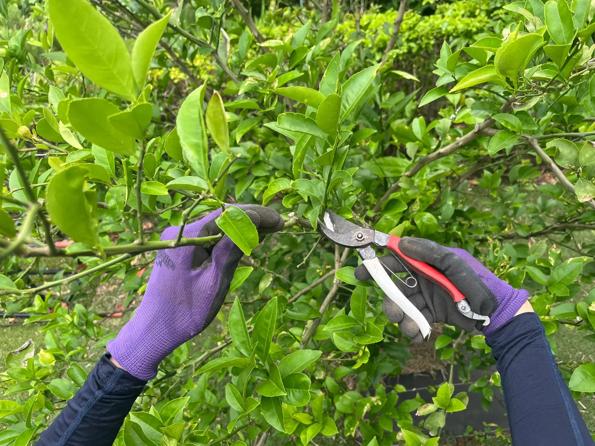
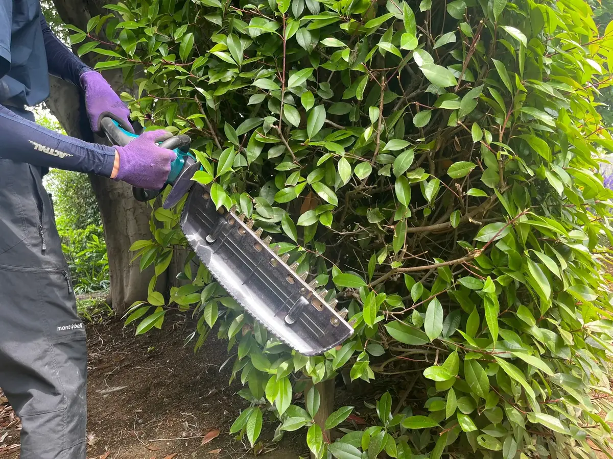

庭木剪定
主に透かし剪定で枝を整理します。
- 1〜2m2,000円〜
- 2〜3m4,000円〜
- 3〜4m7,000円〜
- 4m以上10,000円〜
川越市の庭木剪定
透かし剪定を中心に、伸びた枝や混み合った枝を整理します。庭木1本から対応します。


高さを基準にした最低料金の目安です。枝量や作業条件によって料金は変動します。
主に透かし剪定で枝を整理します。
刈り込んで仕立てる庭木を整えます。
混み合った枝を間引き、風通しや採光に配慮して樹形を整えます。
伸びた枝や混み合った枝を剪定します。
庭木の高さから概算料金を計算できます。
剪定は枝を選んで切り、樹形や風通しを整える作業です。刈込は表面をそろえるように整える作業です。
はい。松の剪定は最低料金10,000円〜となります。
可能です。処分費は枝葉の量に応じて別途ご案内します。
正式な料金は、作業条件を確認してお伝えします。